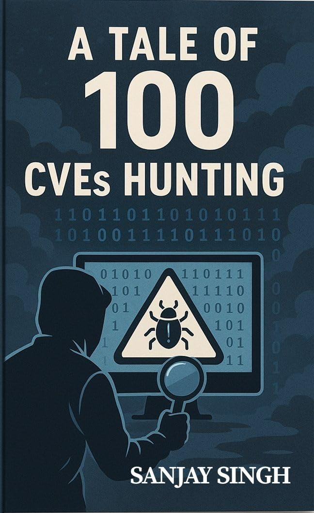
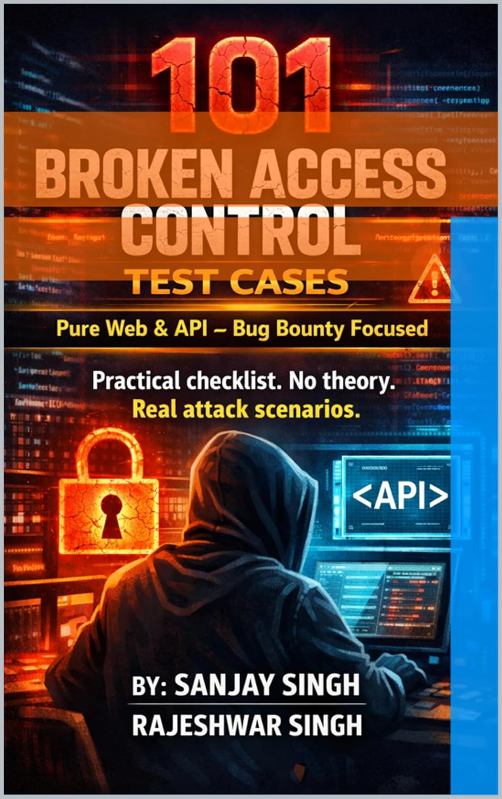
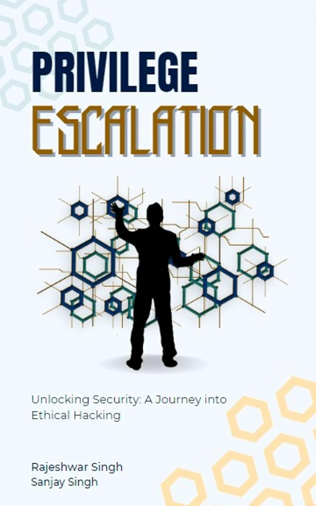

OFFENSIVE SECURITY / INDEPENDENT RESEARCH
Sanjay Singh.
Security researcher.
Known online as sudoninja. I’m a penetration tester and Synack Red Team member with 10+ years of experience finding vulnerabilities and helping secure real-world systems.
Hold empty space for राम chanting.
sudoninja_
Penetration tester. Researcher. Builder.
Type a command and press Enter, or tap one below.
Welcome. Try whoami to meet the researcher.
10+Years in offensive security
100+CVEs responsibly disclosed
6Published cybersecurity books
“Strong security comes from understanding how systems fail.”THE APPROACH
01 / THE WORK
A little about me.
I’m a Senior Manager – Cyber Security Services based in Bangalore, India. My work spans application, infrastructure, and telecom product security, with a focus on vulnerability discovery, protocol fuzzing, and proof-of-concept development. I also write cybersecurity books and share practical research with the community.
01
Application security
Web, API, and mobile penetration testing.
02
Infrastructure & devices
Networks, IoT, routers, and Wi-Fi security.
03
Adversarial research
Red team operations, exploit chaining, and protocol fuzzing.
04
Security compliance
ITSAR, BIS ER-01, EN 303 645, and EN 18031.
OSCPCPTECRTPCAPTCEHCNSPCCEPCAPCCNAPractical API Hacking
INTERACTIVE LAB / 01
Find the vulnerability.
A fictional code puzzle. One missing check. Can you spot it?
invoice-route.jsNODE.JS / EXPRESS
This fictional app lets signed-in users view only their own invoices. Assume requireLogin validates the session and sets req.user.id. The database uses parameterized queries, and no other authorization checks exist.
app.get('/api/invoices/:id', requireLogin, async (req, res) => {
const invoice = await db.oneOrNone(
'SELECT id, total, owner_id FROM invoices WHERE id = $1',
[req.params.id]
);
if (!invoice) return res.sendStatus(404);
res.json(invoice);
});Reveal explanation & fix
Login is not an ownership check.
The query accepts an invoice ID without checking who owns that invoice. A signed-in user could request another user’s invoice ID and receive its data. This is an insecure direct object reference (IDOR), also called broken object-level authorization.
Why the other answers don’t fit: requireLogin already checks authentication, and $1 with a separate values array parameterizes the query. Neither enforces access to a particular invoice.
Scope the lookup to the signed-in user
app.get('/api/invoices/:id', requireLogin, async (req, res) => {
const invoice = await db.oneOrNone(
`SELECT id, total FROM invoices
WHERE id = $1 AND owner_id = $2`,
[req.params.id, req.user.id]
);
if (!invoice) return res.sendStatus(404);
res.json(invoice);
});The owner ID comes from the verified session, not a request parameter. With this ownership-only policy, both missing and inaccessible invoices return 404.
Verify the fix: Alice can read her invoice; Bob cannot read Alice’s invoice; an unauthenticated request is rejected. Unpredictable IDs alone do not replace authorization.
RESEARCH JOURNEY
Disclose. Build. Share.
Selected milestones from published research to practical tools and books.
Early published disclosures
Two cross-site scripting disclosures in NeDi 1.9C: CVE-2020-15035 and CVE-2020-15036. These are the earliest dated disclosures currently featured in this portfolio.
Read the CVE recordResearch reaches Exploit-DB
Published a stored cross-site scripting proof of concept for WordPress MotoPress Hotel Booking Lite 4.2.4.
View the publicationWeb application research
Published SQL injection research for Medicine Tracker System and cross-site scripting research for Online Appointment System.
Explore the researchAuthentication and database security
Published SQL injection / authentication bypass research for Prison Management System, alongside further CVE disclosures featured in the research section.
View the publicationContinuing vulnerability discovery
Published SQL injection research for CloudClassroom PHP Project 1.0. The portfolio also includes a new group of 2025 CVE records.
View the publicationFrom findings to tools and books
A collection of 15 tools and six authored or co-authored cybersecurity books. Recent additions include BountyRadar, sbomx, Kakashi Recon, and browser productivity extensions.
Explore all 15 tools Browse the six books
Dates refer to publication dates shown in the linked records; the final entry is a collection snapshot, not the release date of every tool or book.
02 / RESEARCH
Published CVEs.
100+ disclosures across web, IoT, and telecom.
03 / EXPLOITS
Exploits & proofs of concept.
Published on Exploit-DB.
| Date | Published research | Vulnerability |
|---|---|---|
| 2025-06-05 | CloudClassroom PHP Project 1.0 ↗ | SQL injection |
| 2024-05-13 | Prison Management System ↗ | SQL injection / authentication bypass |
| 2023-04-08 | Medicine Tracker System v1.0 ↗ | SQL injection |
| 2023-04-08 | Online Appointment System v1.0 ↗ | Cross-site scripting |
| 2022-06-10 | WordPress Motopress Hotel Booking Lite 4.2.4 ↗ | Stored cross-site scripting |
04 / FEATURED PROJECTS
Tools, built to share.
Three projects spanning security research, network analysis, and mobile testing.

REFERENCE
Cybersecurity Resource Matrix
Built a searchable knowledge base spanning 46 security domains, with structured guides to tools, standards, labs, and learning paths.
Try the live tool ↗Interactive demo opens in a new tab.
Explore project ↗
NETWORK ANALYSISExplore project ↗
SudoShark
Built a browser-based PCAP analyzer with protocol decoding, credential detection, TLS auditing, and exportable security reports.
▶ Watch 45-second preview
First 45 seconds of the published walkthrough. Press play to start.
Watch the full demo on YouTube ↗
ANDROID SECURITY
APK Auditor Threat Console
Built an in-browser Android analysis console that parses DEX bytecode, decodes manifests, reviews signing certificates, and detects secrets.
Try the live tool ↗Interactive demo opens in a new tab.
Explore project ↗More tools
BountyRadar
Chrome extension that detects bug bounty and vulnerability disclosure programs while you browse, with program tracking and scope links.
View project ↗sbomx
Software and hardware bill-of-materials scanner with CycloneDX/SPDX output and CVE reports using NVD and OSV.
View project ↗TouchGrass
Set time limits for distracting sites and take timed breaks with an animated sunny field.
View project ↗Breathe
Turn browsing limits into guided breathing breaks with an inhale/exhale circle and a configurable countdown.
View project ↗Bonsai
A browser break reminder that grows a virtual bonsai tree while your break timer counts down.
View project ↗Kakashi Recon
Modular web reconnaissance with 20 modules, a Python CLI, an Electron desktop interface, and exportable reports.
View on GitHub ↗Region Capture
Browser extension for region screenshots and screen recording, with redaction tools and optional evidence watermarks.
View on GitHub ↗Auto Clicker
Python desktop utility for repeated clicks at a selected screen position, with adjustable intervals, a countdown, and an emergency stop.
View on GitHub ↗Keep-TeamsOnline
Windows PowerShell utility that simulates mouse and keyboard activity to help prevent Teams from switching to Away.
View on GitHub ↗SecureScan Suite
Web security assessment dashboard for reconnaissance, headers, and TLS.
Launch tool ↗DOCX Pro
Document generation for security reports, findings, and compliance write-ups.
Launch tool ↗IPA Auditor Threat Console
Static analysis of iOS application bundles for mobile security assessments.
Launch tool ↗05 / BOOKS
Six books. Knowledge shared.

A Tale of 100 CVE’s Hunting
Vulnerability research and the stories behind 100 CVEs.
View on Amazon ↗How to Become a Penetration Tester: Zero to One
Skills, tools, and strategies for an ethical hacking career.
View on Amazon ↗How to Start a Career in Cybersecurity
A roadmap from learning the basics to a first security role.
View on Amazon ↗
101 Broken Access Control Test Cases
Access control testing for web applications, APIs, and bug bounty research.
View on Amazon ↗Cyber-Security Journey: A Comprehensive Guide
Cybersecurity fundamentals and career development.
View on Amazon ↗
Privilege Escalation: Unlocking Security
Post-exploitation and privilege escalation techniques.
View on Amazon ↗06 / SERVICES
Practical offensive security.
Available for assessments and research collaboration.
Web application testing
Black-box, gray-box, and authenticated testing against OWASP Top 10 and beyond.
Mobile app testing
Static and dynamic analysis of Android and iOS apps, including business logic.
Network & infrastructure
Internal and external testing of servers, firewalls, routers, and network services.
API security testing
REST, SOAP, and GraphQL testing for authentication, access control, injection, and logic flaws.
IoT & telecom security
Firmware and protocol testing, including EN 303 645 and EN 18031 requirements.
Reporting & guidance
Proof-of-concept-backed reports with risk ratings and practical remediation steps.
SAMPLE DELIVERABLE
From finding to fix.
A clear report helps your team understand the risk, reproduce the issue, and verify the fix.
WEB APPLICATION ASSESSMENT / EXCERPTFictional example
This illustrative report uses invented accounts and data. It is not a client report or evidence of a completed engagement. Report scope and retesting are agreed for each project.
FINDING WEB-01
Missing invoice ownership check
An authenticated user can read another customer’s invoice because the API checks login status without verifying ownership.
- Illustrative severity
- High
- Affected component
- Invoice API
- Sample status
- Open · retest pending
01 / Scope and business impact
Example scope: a fictional staging application, its invoice API, and two test accounts with the same standard customer role.
Impact: invoice details intended for one customer could be exposed to another signed-in customer. In a real report, severity would reflect the data involved, access requirements, and confirmed exposure.
Limit: this excerpt demonstrates one finding; it does not represent a complete assessment.
02 / Reproduction and supporting evidence
- Create an invoice under test account A and record its identifier.
- Sign in as test account B, which has no access to account A’s invoices.
- Request that invoice through the invoice API using account B’s session.
- Compare the returned owner with the signed-in test account.
Request as test account B:
GET /api/invoices/INV-DEMO-104
Observed response in this fictional example:
HTTP 200
{ "invoiceId": "INV-DEMO-104", "owner": "test-account-A" }
Expected: access denied, with no invoice data returned.A real report would include sanitized request/response evidence and enough context to reproduce the finding within the authorized test scope.
03 / Recommended remediation
Enforce authorization on every invoice request. Use the identity from the verified session to check whether the user owns the invoice or has an explicitly permitted role before returning any data.
Apply the same check to related download and export endpoints. Avoid relying on hidden links or unpredictable identifiers as access controls.
04 / Retest and acceptance checks
- Account A can still access its own invoice.
- Account B is denied access to account A’s invoice and receives no invoice data.
- Unauthenticated requests are rejected.
- Related invoice download and export routes enforce the same permissions.
Retest record: pending in this sample. A completed retest would record the tested build, date, evidence, and whether the issue is fixed, partially fixed, or still open.
07 / PRICING
Engagement options.
Indicative pricing. Final cost depends on scope, complexity, and depth.
$199
Vulnerability assessment
- Asset and subdomain discovery
- Port and service mapping
- Technology fingerprinting
- Report within 3 days
$299
Network penetration test
- Attack surface mapping
- Automated and manual scanning
- Manual validation and exploitation
- Report within 5 days
$499
Web application penetration test
- Manual and automated testing
- Business logic review
- Retest window included
- Report within 15 days
CUSTOM TOOL DEVELOPMENT
Built around your workflow.
Custom security tools and automation, from a focused utility to an integrated solution.
Essential build
From $200 USD
A focused tool for one clearly defined task. Ideal for a command-line utility, an internal script, or a lightweight security workflow.
- Single-purpose script or CLI tool
- One core feature or workflow
- Usage instructions and basic documentation
- Delivery timeline agreed before work begins
Professional build
From $300 USD
A more complete tool that brings related tasks into one workflow. Ideal for recurring security operations, internal dashboards, or multi-step automation.
- Multiple connected features or modules
- Web interface or dashboard
- Logic tailored to your workflow
- Documentation and setup support
Enterprise / Custom
Let’s talk Custom quote
A tailored engagement for complex workflows, connected systems, or evolving team needs. Scope, delivery, and support are defined together before development starts.
- Scope tailored to your requirements
- Third-party integrations and API connectivity
- Ongoing maintenance available by agreement
- Custom quote based on scope and complexity
Share your goal, required features, and preferred timeline. Prices are starting estimates in USD; the final quote and delivery schedule depend on the agreed scope and complexity. These packages cover tool development; security assessment pricing is listed separately above.
HOW WE WORK TOGETHER
From idea to handover.
A clear path for your custom tool, with scope and expectations agreed from the start.
Share requirements
Tell me the problem you want to solve, who will use the tool, and your required features, budget, and preferred timeline.
Agree scope and quote
We define the deliverables, acceptance criteria, price, payment milestones, and delivery schedule before development begins.
Build and review
I develop the agreed solution and share it for review. We check it against the requirements and work through the included revisions.
Handover
You receive the agreed deliverables, documentation, and setup guidance. Source-code rights and any ongoing support follow the terms in your proposal.
BEFORE WE START
A few practical questions.
Clear expectations from the first conversation to handover.
Who owns the source code?
Source-code ownership and usage rights are agreed in writing before development begins. The proposal will identify what is handed over, any reusable components, and any third-party dependencies with their own licences.
How are revisions handled?
We agree on the deliverables, acceptance criteria, and included revision rounds before starting. Feedback is reviewed against that scope. New features or changes beyond it are discussed and quoted separately before additional work begins.
How do payments work?
The proposal sets out the payment milestones, amounts, and due dates. Depending on the project, these may include an initial payment, a review milestone, and a final payment at handover. The schedule is agreed before work starts.
Is maintenance included?
Ongoing maintenance is scoped separately unless explicitly included in the proposal. We can discuss bug-fix support, dependency updates, compatibility changes, and future improvements, with the support period and response expectations agreed in advance.
Have a different question? Let’s discuss your project
08 / WRITING
Notes from the field.
Easy to Find 3 Bugs on Sign-in & Sign-up
Read article ↗Directory Listings Checker
Read article ↗ShinobiLabs: Hidden Leaf Exploit
Read article ↗09 / KEEP IN TOUCH
Good security starts
with a conversation.
Based in Bangalore, Karnataka, India.
For security assessments and research collaboration.